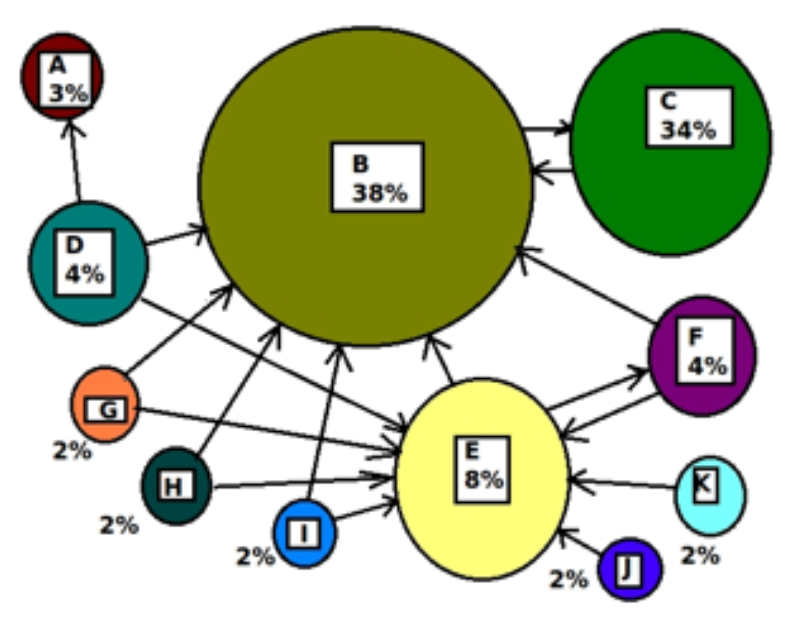
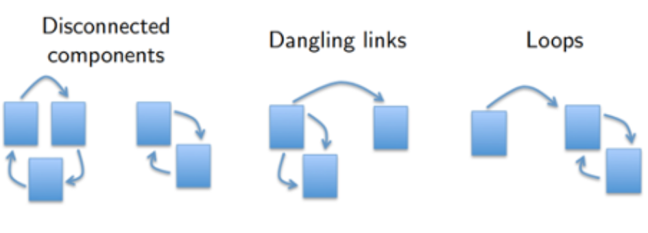
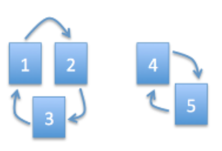
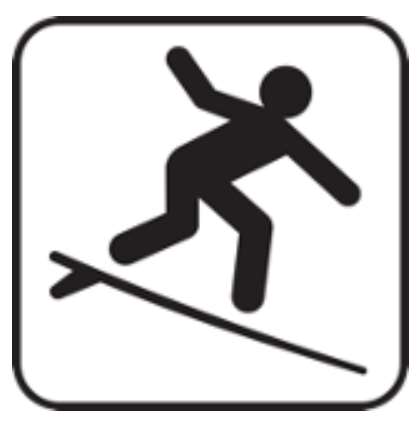
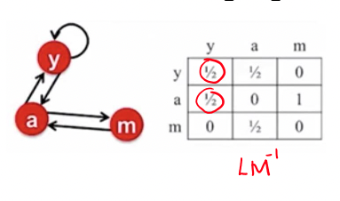
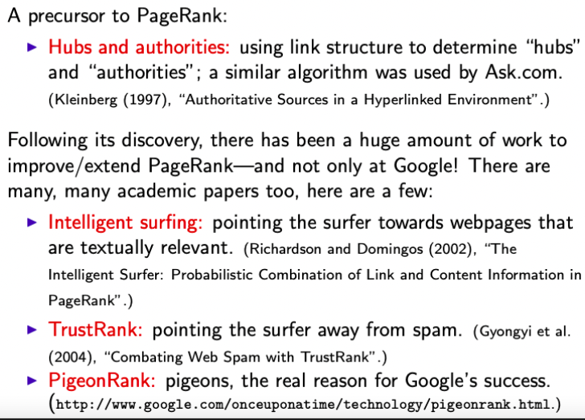

Álgebra Linear Computacional
Aula 09: PageRank
Heitor S. Ramos
ramosh@dcc.ufmg.br
Créditos
Important
Os slides desse curso são fortemente baseados no curso do Fabrício Murai e do Erickson Nascimento
Objetivos de aprendizagem
- Conhecer fatores que afetam rank de uma página Web e entender a recursividade do Rank
- Entender relação entre descrição do BrokenRank, modelo Random Surfer e sistema de equações
- Saber escrever sistema de equações do rank dado um grafo
- Entender por que a solução do rank é o autovetor do autovalor 1
- Entender por que o BrokenRank é “quebrado” e como corrigí-lo
- Entender quando \(\lim_{k\rightarrow \infty} A^k p\) converge
- Saber executar manualmente o método da potência
- Conhecer fatores que influenciam o tempo de execução do método da potência
Referências adicionais
Aplicações de \(A = X\Lambda X^{-1}\)
- Potenciação rápida de matrizes
- N-ésimo número de Fibonacci
- Comportamento de EDOs
- Linear Discriminant Analysis
- Cadeias de Markov (health care economics, Page Rank)
Uma grande inovação do final dos anos 90 é o surgimento das ferramentas de busca, começando com Alta Vista do DEC’s Western Research Lab e tendo como ápice o Google, fundado pelos doutorandos de Stanford Larry Page e Sergey Brin
Note
O coração da ferramenta de busca do Google é o algoritmo PageRank, escrito por Larry Page, Sergey Brin, Rajeev Motwani (que se afogou em acidente trágico em 2009) e Terry Winograd.
Fundamentos do PageRank
Tipicamente uma ferramenta de busca encontra centenas ou milhares de respostas relevantes a uma consulta
Problema: como ordenar as respostas recuperadas?
Possíveis soluções
Usar a frequência com que os termos buscados aparecem na página Analisar o histórico de acesso às páginas, para definir as mais importantes
Important
Estas soluções não são muito objetivas, nem escaláveis!
Tip
Felizmente, existe uma estrutura subjacente que pode ser usada para resolver ambos os problemas: os links entre as páginas!
Ideia original do Google
- Pagerank (importância) de uma página i é baseada nos links que recebe de outras páginas:
- Se i recebe links de páginas com pagerank alto, links contribuem bastante (recursão!)
- Se as páginas que tem link para i, tem link para muitas páginas, contribuição é menor

BrokenRank (quase PageRank)
Seja \(L_{ij} = 1\) se a página \(j\) tem link para a página \(i\) (\(j\rightarrow i\)) e \(L{ij} = 0\) caso contrário. Sejam \(m_j=\sum_k L_{kj}\) o grau de saída de \(j\). O BrokenRank \(p_i\) da página \(i\) será
\[ p_i = \sum_{j\rightarrow i} \frac{p_j}{m_j} = \sum_{j=1}^n \frac{L_{ij}}{m_j}p_j \]
Danger
Essa definição satisfaz as condições anteriores?
BrokenRank em notação matricial
\[p = \begin{bmatrix}p_1 \\ p_2\\ \vdots \\ p_n\end{bmatrix}_{n\times 1}, L = \begin{bmatrix}L_{11} & L_{12} & \ldots & L_{1n}\\ L_{21} & L_{22} & \ldots & L_{2n} \\ \vdots &\vdots&\ddots&\vdots\\ L_{n1} & L_{n2} & \ldots & L_{nn}\end{bmatrix}_{n\times n}\]
\[M = \begin{bmatrix}m_1 & 0 &\ldots & 0\\ 0 & m_2 & \ldots & 0\\\vdots &\vdots&\ddots&\vdots\\ 0 & 0 & \dots & m_n\end{bmatrix}_{n\times n}\]
Vetor BrokenRank de \(p\)
\[ p = LM^{-1}p\]
Autovalroes e Autovetores
Seja \(A = LM^{-1}\), então \(p = Ap\). O que isso quer dizer?
Important
p é um autovetor de \(A\) com autovalor 1!
Agora precisamos saber como calcular os autovalores e autovetores de \(A\). Existem métodos eficientes para isso quando \(A\) é grande e esparsa. Por que isso se aplica nesse caso?
Random Surfer model
Podemos pensar no BrokenRank como um usuário que surfa a Web clicando nos links de maneira uniformemente aleatória
Suponha que \(p^{(0)}\) seja o vetor n-dimensional que dá a probabilidade de começar em cada página. Depois de um passo, a probabilidade de estar em cada página é dada por \(p^{(1)} = Ap^{(0)}\). (Por quê?)
\[p^{(1)} = p_1^{(0)}\frac{L_{i1}}{m_1} + p_2^{(0)}\frac{L_{i2}}{m_2} + \ldots + p_n^{(0)}\frac{L_{in}}{m_n} = \sum_{i=1}^n\frac{L_{ij}}{mij}p_j^{(0)}\]
\[p^{(i+1)} = A p^{(i)}\]
Conexão c/ cadeias de Markov
A matriz \(A\) é uma matriz de transição de probabilidade que governa uma Cadeia de Markov.
Teoria de Cadeias de Markov nos diz que o vetor \(p^{(t)}\) converge para um \(p\) único quando o grafo é:
- Fortemente conectado (cada página possui caminho p/ todas outras páginas) e
- É não-bipartido
- Não periódico
Interpretação: \(p_i\) é a proporção do tempo que o usuário passa na página \(i\) se deixarmos ele navegar infinitamente.
Por que BrokenRank é broken?
Problema: o grafo sobre o qual o random surfer navega não é fortemente conectado 
Note
Vetor p sempre existe, mas pode não ser único. Ou seja, o vetor BrokenRank \(p\) existe, mas é ambíguo.
Exemplo com BrokenRank
\[ A = LM^{-1} = \begin{bmatrix}0&0&1&0&0\\1&0&0&0&0\\0&1&0&0&0\\0&0&0&0&1\\0&0&0&1&0\end{bmatrix}\]

2 autovetores de \(A\) com \(\lambda=1\)
\[p = \begin{bmatrix}\frac{1}{3}\\\frac{1}{3}\\\frac{1}{3}\\0\\0\end{bmatrix} \text{ e } \begin{bmatrix}0\\0\\0\\\frac{1}{2}\\\frac{1}{2}\end{bmatrix}\]
Important
Estes rankings são totalmente opostos!
Definição de PageRank
PageRank é uma pequena variação do BrokenRank
Com probabilidade \(1-d\) o random surfer dá um salto aleatório (escolhe uma página uniformemente do universo de páginas);
Com probabilidade \(d\) ele escolhe um dos links da página atual de maneira uniforme aleatória.
Definição de PageRank
- PageRank é uma pequena variação do BrokenRank
\[ p_i = \frac{1-d}{n} + d\sum_{j\rightarrow i} \frac{p_j}{m_j} = \frac{1-d}{n} + d\sum_{j=1}\frac{L_{ij}}{m_j}p_j\]
onde \(0<d<1\) é uma constante (ex: \(d=0.85\))
Em notação matricial
\[ p = \left( \frac{1-d}{n}E + dLM^{-1}\right)p\]
onde \(E\) é a matriz \(n\times n\) de \(1s\)
Definição do PageRank
Conferindo equivalência das duas definições
\[ p_i = \frac{1-d}{n} + d\sum_{j\rightarrow i} \frac{p_j}{m_j} = \frac{1-d}{n} + d\sum_{j=1}\frac{L_{ij}}{m_j}p_j\]
\[ p = \left(\frac{1-d}{n}E + dLM^{-1}\right)p\]
\[ \begin{bmatrix}p\end{bmatrix} = \frac{1-d}{n}\begin{bmatrix}1&\ldots&1\\\vdots&\ddots&\vdots\\1&\ldots&1\end{bmatrix}\begin{bmatrix}p\end{bmatrix} + d\begin{bmatrix}LM^{-1}\end{bmatrix}\begin{bmatrix}p\end{bmatrix}\]
\[ \begin{bmatrix}p\end{bmatrix} = 1-d\begin{bmatrix}1/n&\ldots&1/n\\\vdots&\ddots&\vdots\\1/n&\ldots&1/n\end{bmatrix}\begin{bmatrix}p\end{bmatrix} + d\begin{bmatrix}LM^{-1}\end{bmatrix}\begin{bmatrix}p\end{bmatrix}\]
\[p_i = \frac{1-d}{n}(p_1+p_2+\dots+p_n) + d \sum_{i=1}^n \frac{L_{ij}}{m_j}p_j\]
\[p_i = \frac{1-d}{n} + d \sum_{i=1}^n \frac{L_{ij}}{m_j}p_j\]
PageRank possui \(p\) único
Este modelo é um random surfer com random jumps
Agora existe um caminho de cada página para todas as outras páginas. Portanto, o vetor \(p\) é único (quando sujeito à restrição \(\sum_{i} p_i = 1\)).

Exemplo
Com \(d = 0.85, A= \frac{1-d}{n}E + d LM^{-1}\)
Exemplo
Com \(d = 0.85, A= \frac{1-d}{n}E + d LM^{-1}\)
\[\begin{align} &= \frac{0.15}{5}\begin{bmatrix}1 & 1 & 1 & 1 & 1\\1 & 1 & 1 & 1 & 1\\1 & 1 & 1 & 1 & 1\\1 & 1 & 1 & 1 & 1\\1 & 1 & 1 & 1 & 1\end{bmatrix} + 0.85\begin{bmatrix}0 & 0 & 1 & 0 & 0\\1 & 0 & 0 & 0 & 0\\0 & 1 & 0 & 0 & 0\\0 & 0 & 0 & 0 & 1\\0 & 0 & 0 & 1 & 0\end{bmatrix}\\ &= \begin{bmatrix}0.03 & 0.03 & 0.88 & 0.03 & 0.03\\0.88 & 0.03 & 0.03 & 0.03 & 0.03\\0.03 & 0.88 & 0.03 & 0.03 & 0.03\\0.03 & 0.03 & 0.03 & 0.03 & 0.88\\0.03 & 0.03 & 0.03 & 0.88 & 0.03\end{bmatrix} \end{align}\]
Agora possui apenas um autovetor
\[ p = \begin{bmatrix}0.2\\0.2\\0.2\\0.2\\0.2\end{bmatrix}\]
Computando o vetor PageRank
Poderíamos calcular o vetor PageRank \(p\) com decomposição espectral, mas o custo é da ordem de \(n^3\) operações. Quando \(n=3\times 10^{10}\), \(n^3 = 2.7x10^{31}…\) (isto sem falar na memória)
Felizmente, só precisamos do autovetor com \(\lambda=1\). Melhor ainda: sabe-se que todos os outros autovalores tem valor absoluto \(< 1\).
Computando o vetor PageRank
Lembrando que
\[ p^{(i)} = A p^{(i-1)}= A^2p^{(i-2)} = A^3p^{(i-3)}\ldots\]
\[p = c_1x_1 + c_2x_2 + \ldots + c_nx_n\]
\[A^kp = c_1\lambda^k x_1 + \ldots + c_n\lambda_n^kx_n\]
Sem perda de generalidade, suponha
\[ \lambda_1 = 1 > \vert \lambda_2\vert \ge \vert \lambda_3 \vert \ge \ldots \ge \vert \lambda_n\vert\]
O que acontece se pré-multiplicarmos o vetor \(p^{(0)}\) por \(A\) muitas vezes?
Resposta: quando \(t\rightarrow \infty\) vai convergir para \(c_1x_1\)
Note
Lembrando que \(c_1x_1\) é uma constante vezes o autovetor cujo autovalor é igual a 1
Método da potência (Power Method)
Comece com qualquer distribuição \(p^{(0)}\) (ex: uniforme)
Faça:
\[\begin{align} p^{(1)} &= Ap^{(0)}\\ p^{(2)} &= Ap^{(1)}\\ \vdots\\ p^{(t)} &= Ap^{(t-1)}\approx c_1x_1\\ \end{align}\]
Note
Não precisamos nos preocupar com \(c_1\), pois basta normalizar (soma um). Na prática normalizamos a cada passo e repetimos até que \(p\) não mude “muito”
Método da potência (Exemplo)
Comece com qualquer distribuição (ex: uniforme) 
\[ p^{(0)} = \begin{bmatrix}1/3\\1/3\\1/3\end{bmatrix}\]
\[\begin{align} A &= \frac{1-d}{n}E + dLM^{-1}\\ &= \begin{bmatrix}0.05 & 0.05 & 0.05\\0.05 &0.05&0.05\\0.05&0.05&0.05\end{bmatrix} + \begin{bmatrix}0.425 & 0.425&0\\0.425&0&0.85\\0&0.425&0\end{bmatrix}\\ p^{(1)} &= \begin{bmatrix}0.475&0.475&0.05\\0.475&0.05&0.9\\0.05&0.475&0.05\end{bmatrix}\begin{bmatrix}1/3\\1/3\\1/3\end{bmatrix}\\ p^{(1)}&= \begin{bmatrix}0.333\\0.475\\0.192\end{bmatrix}\\ p^{(2)} &= \begin{bmatrix}0.475&0.475&0.05\\0.475&0.05&0.9\\0.05&0.475&0.05\end{bmatrix}\begin{bmatrix}0.333\\0.495\\0.192\end{bmatrix}\\ p^{(2)}&= \begin{bmatrix}0.394\\0.355\\0.252\end{bmatrix} \end{align}\]
Método da potência (continuação)
- Há ainda duas questões importantes sobre o cálculo do vetor pagerank \(p\) usando power method
- Como executar cada iteração rapidamente? (custo de multiplicar matriz por vetor é \(O(n^2)\)).
- Quantas iterações \(t\) são necessárias?
Método da potência (continuação)
- A grosso modo, as respostas são:
- Usando a esparsidade do grafo da web (como?)
- Não muitas se o spectral gap (diferença entre primeiro e segundo maiores autovalores absolutos) for grande; o maior é 1, o segundo maior é \(\le d\).
Uma busca básica na Web
Solução 1: Para fazer uma busca na web e responder uma consulta, podemos
- Calcular o vetor PageRank \(p\) uma vez (Google recomputa-o de tempos em tempos).
- Encontre os documentos contendo todas palavras da consulta.
- Ordene estes documentos por PageRank e retorne os top \(k\) (e.g. \(k=50\))
Uma busca básica na Web
Podemos melhorar solução usando escores de similaridade entre página e consulta.
Solução 2: (passos 1 e 2 iguais à anterior)
- Ordene estes documentos por PageRank e mantenha apenas os top K (e.g. \(K=5000\))
- Ordene por similaridade à consulta (e.g., normalized IDF weighted-distance), e retorne os top k (e.g., \(k=50\))
Variantes / Extensões do PageRank
